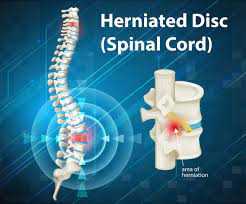

Herniated discs/h1>

SYMPTOMS:
Symptoms of neck (cervical) spinal stenosis include:
-
Pain near or between your shoulder blades.
-
Pain that travels to your shoulder, arm and sometimes your hand and fingers.
-
Neck pain, especially in the back and on the sides of your neck.
-
Pain that increases when bending or turning your neck.
-
Numbness or tingling in your arms.
CAUSES
Several factors can contribute to a disk rupture, including:
-
Aging.
-
Excessive weight.
-
Repetitive motions.
-
Sudden strain from improper lifting or twisting.
DIAGNOSIS
Your healthcare provider will do a thorough exam. During the physical, your provider will assess your pain, muscle reflexes, sensation and muscle strength. Your provider may also order tests such as:
- Magnetic resonance imaging (MRI): The most common and accurate imaging test for a suspected herniated disk is an MRI.
-
X-rays: Getting X-rays helps rule out other causes of back or neck pain.
-
Computed tomography (CT): A CT scan show the bones of your spine. Herniated disks can move into the space around your spinal cord and nerves and press on them.
-
Myelogram: A myelogram involves an injection of dye into your spine using X-ray guidance for a CT scan. The dye can reveal a narrowing of the spinal canal (spinal stenosis) and location of your herniated disk.
-
Electromyogram (EMG): This test involves placing small needles into various muscles and evaluate the function of your nerves. An EMG helps determine which nerve a herniated disk affects.
TREATMENTS
In most cases, pain from a herniated disk can go away in time. To ease pain while your disk heals, you can:
-
Rest for one to three days, if the pain is severe, but it important to avoid long periods of bed rest to prevent stiffness.
-
Take an over-the-counter pain reliever, such as ibuprofen or acetaminophen.
-
Apply heat or ice to the affected area.